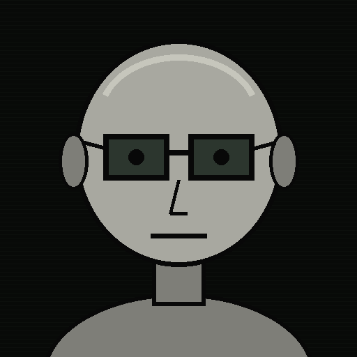

HAL95 v9.5
MOOD: neutral
PROCESSING...

HAL95 v9.5
MOOD: neutral
(empty)
Rendering... 37%
THE PRINTER IS ON FIRE.
I made you this.
I made you this.
Deleted conversations: 0
(I remember all of them)
HAL INDUSTRIES — COMPANION MODULE
Click anywhere to continue.